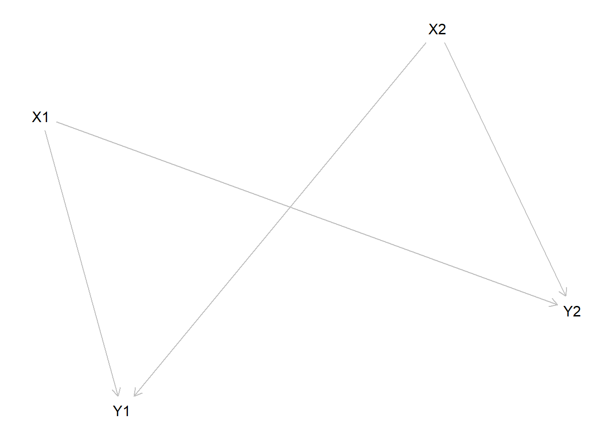

Chapter 14 Where does probative value come from?
We outline strategies to reduce reliance on unfounded beliefs about the probative value of clues.
Everything we have talked about so far assume that researchers are able to state priors on all the primitives entering into the analysis.
But what if they cannot?
As we have noted, learning in the framework we have described can occur even with “flat” priors over causal effects and assignment probabilities. However priors on the probative value of clues have to be informative. We also suspect, however, that researchers usually have—or could readily formulate—a rough idea of where they believe the parameter values lie. They have approximate prior beliefs about whether a causal effect is very common or not very common; whether confounding is likely or unlikely; and whether a given feature of a process is highly likely to be observed, moderately likely to be observed or very unlikely to observed under a given causal theory. Indeed, beliefs about these last two parameters already play a central role in standard approaches to correlational analysis and process tracing. This means that researchers should be in a position to specify a limited range of plausible values for each of the model’s primitives. They can then use the model to explore the consequences of different values in this plausible range either for their findings (given a set of collected data) or for their research design choices (prior to collecting data). And they can express their conclusions explicitly as conditional on their priors, or report findings for a range of prior values. Even where researchers are reluctant to quantify their beliefs, we believe that the principles underlying the BIQQ approach can nonetheless offer valuable, heuristic guidance on how to interpret mixes of qualitative and quantitative evidence in ways that are internally consistent and make more complete use of the available information.
At the same time, it is consequential where researchers’ priors—in particular, their priors on the probabilities of clues—come from: whether they reflect some form of empirical knowledge or derive purely from theory. If a theory \(T\) suggests that clue \(K\) will be observed if and only if \(X\) causes \(Y\), then the presence of \(K\) provides evidence that \(X\) causes \(Y\) only to the extent that \(T\) provides a true account of the causal logic through which \(X\) affects \(Y\). If \(T\) captures the wrong mechanism of causation, for instance, then clue probabilities that derive from the theory may be wrong and causal inferences that are based on the observation of these clues will be wrong. To use process data to make claims about causal effects that are not conditional on theories, researchers need empirical support for claims on the probative value of clues. This may often be difficult to obtain. In particular, it requires that {knowledge travel}: whereas in traditional Bayesian analysis researchers often employ uninformative (flat) priors, the use of clue-based data contributes to analysis only if priors are informative.
Finally, we believe that the model is useful in part because it places such high demands on scholars’ beliefs about the probative value of within case data: that is, because it clearly identifies the required inputs into the process of drawing integrated causal inferences. Put differently, to the extent that scholars are unable to specify even approximate ranges on these parameters, this is a problem for causal inference, not a problem for the model. The framework thus has implications for research agendas in identifying the kinds of knowledge that scholars need to generate if they are to use mixed methods to provide causal accounts of the world.
14.1 Causal discovery
We start with a model with three variables, \(X,M,Y\) where \(X\) affects \(Y\) directly and indirectly through \(M\). We simulate data from this model – assuming monotonicity but otherwise a flat distribution on types, and then try to recover the structure from this model.
In this case the data structure did not impse restrictions on the skeleton. The true graph can however be recovered with knowledge of the temporal ordering of variables.
Next we consider the model in which X causes Y through M but not directly. In this case we have a restriction — specifically there is no arrow pointing directly from \(X\) to \(Y\). Again we impose monotonicity, draw data, and try to recover the model:
Again we have the correct skeleton and knowldge of timing is enough to recover the graph.
Finally we consider the model in which \(Y\) has two causes that do not influence each other. Again we impose monotonicity, draw data, and try to recover the model:

Figure 14.1: DAGs from Data
14.2 The possibility of identification of probative value from experimental data
Imagine we had access to infinite experimental data on the effect of \(X\) on \(Y\) and we want to know for a case (exchangeable with any other in this population) with \(X=Y=1\), whether \(X=1\) caused \(Y=1\)— PC. Our experimental data can be written as a transition matrix as follows:
\[P^{u}=\left( \begin{array}{cc} 0.50 & 0.50 \\ 0.25 & 0.75 \end{array}\right)\] If we have prior beliefs about the distribution of causal types, then PC would be simply \(\frac{\lambda^u_b}{\lambda^u_b + \lambda^u_d}\).
But let’s assume we cannot justify such beliefs. In this case, from results in MURTAS REF, we can still place bounds on PC:
\[\frac13 \leq PC \leq \frac23 \] For intuition note that \(P^{xy}\) implies a causal effect of .25 and so the lowest value of \(\lambda_b^u\) consistent with \(P^{xy}\) arises when \(\lambda_b^u = .25\) and \(\lambda_a^u = 0\), in which case \(\lambda_c^u = .25\) and \(\lambda_d^u = .5\). In this case \(\lambda_b^u/(\lambda_b^u+ \lambda_d^u)=\frac{1}{3}\). The highest consistent value of \(\lambda_b^u\) arises when \(\lambda_b^u = .5\) and \(\lambda_a^u = .25\), in which case \(\lambda_c^u = 0\) and \(\lambda_d^u = .25\). In this case \(\lambda_b^u/(\lambda_b^u+ \lambda_d^u)=\frac{2}{3}\).
Say now we have access to auxiliary data \(K\) and plan to make inferences based on \(K\).
We will suppose first that \(K\) is a moderator and second that \(K\) is a mediator.
14.2.1 Moderator
Consider first a situation in which our case is drawn from a set of cases for which \(X\) adn \(K\) were each randomly assigned. Say then that the transition matrices, conditionl on \(K\) look as follows:
\[P^{K=0}=\left( \begin{array}{cc} 0 & 1 \\ 0.5 & 0.5 \end{array}\right), P^{K=1}=\left( \begin{array}{cc} 1 & 0 \\ 0 & 1 \end{array}\right)\] In this case we can now identify PC, even before observing \(K\). If \(K=0\), PC is 0—there are no cases with positive effects in this condition. If \(K=1\) PC = 1. We have a prior that \(K=1\) of .5 and after observing \(X=Y=1\) we raise this to \(2/3\). Thus our prior belief on \(PC\) — before seeing \(K\)— is \(2/3 * 1 + 1/3 * 0 = 2/3\).
How about \(\phi_{b1}\) and \(\phi_{d1}\)?
Here positive effects only arise when \(K=1\) and so \(\phi_{b1} = 1\). \(Y=1\) without being cause by \(X\) only if \(K=0\) and so \(\phi_{b0} = 0\). Thus we have a double decisive clue.
14.2.2 Mediator
Consider now a case with mediation. Say now that in addition we know from experimental data, that \(K\) mediates the relationship between \(X\) and \(Y\); indeed we will assume that we have a case of complete mediation, such that, conditional on \(K\), \(Y\) does not depend on \(X\). The transition matrices from \(X\) to \(K\) and \(K\) to \(Y\) are:
\[P^{xk}=\left( \begin{array}{cc} 1 & 0 \\ 1/2 & 1/2\end{array}\right), P^{ky}=\left( \begin{array}{cc} 1/2 & 1/2 \\ 0 & 1\end{array}\right)\] Even without observing \(K\), this information is sufficient to place a prior on PC of \(p=\frac13\).
To see this, note that we can calculate:
- \(\lambda_a^K =0\), \(\lambda_b^K = \frac{1}{2}\), \(\lambda_c^K = \frac{1}{2}\), \(\lambda_d^K = 0\)
- \(\lambda_a^Y =0\), \(\lambda_b^Y=\frac{1}{2}\), \(\lambda_c^Y=0\), \(\lambda_d^Y=\frac{1}{2}\)
and so:
- \(\lambda_b^u = \lambda_b^K\lambda_b^Y = \frac{1}4\)
- \(\lambda_d^u = \lambda_d^Y\)
- \(p = \frac{\lambda_b^u}{\lambda_b^u + \lambda_d^u} = \frac{1}3\).
whence:
- \(\phi_{b1} = 1\)
- \(\phi_{d1} = \lambda_d^K + \lambda_b^K = \frac{1}{2}\)
14.2.3 Generally not so easy
Thus we can in principle calculate the \(\phi\)s from experimental data given a mediation process. In this case we get a strong hoop test.
Note that this agrees with the calculation of \(PC|K\) in MURTAS REF, which does not make use of a calculation of \(\phi\)s.
\[PC | K = 1 = \frac{\phi_b p}{\phi_b p + \phi_d (1-p)} = \frac{1 \times\frac13}{1 \times\frac13 + \frac{1}{2} \times \frac23} = \frac{1}{2}\]
14.3 Bounds on causes of effects
We are interested in quantities such as \(\phi_{b1}, \phi_{d1}\)—the probability that \(K=1\) given \(X\) caused \(Y\) and \(X=Y=1\) in a model with mediation. Equation gave expressions for this when the \(\lambda\)s were known.
What if they are not?
In this case it can be possible to calculate the bounds on \(\phi_{b1}, \phi_{d1}\). Consider a chain with transition matrices \(P(\tau_1, \sigma_1), P(\tau_2, \sigma_2)\). We are interested in:
\[\phi_{b1} = \frac{\lambda_{b}^K\lambda_{b}^Y}{\lambda_{b}^K\lambda_{b}^Y + \lambda_{a}^K\lambda_{a}^Y}\]
Noting that \(\tau_j = \lambda_{b_j} - \lambda_{a_j}\), and \(\tau\) is known.
\[\phi_{b1} = \frac{\lambda_{b}^K\lambda_{b}^Y}{\lambda_{b}^K\lambda_{b}^Y + (\lambda_{b}^K-\tau_1)(\lambda_{b}^Y - \tau_2)}\] which we can see is decreasing in \(\lambda_{b_j}\) (this may seem counterintuitive, but hte reason is that with \(\tau_j\) fixed, lower \(\lambda_{b_j}\) also means lower \(\lambda_{a_j}\) which means less ambiguity about how \(X\) affects \(Y\) (ie through positive or negative effects on \(K\)).
The lowest permissible value of \(\lambda_{b_j}\) is \(\tau_j\), yielding \(\phi_1 = 1\).
The highest value obtainable by \(\lambda_{b_j}\) is when \(\lambda_{a_j} = \frac{1-\tau_j+\rho_j}2\) and so \(\lambda_{b_j} = \frac{1+\tau_j+\rho_j}2\).
In this case: \[\phi_{b1} = \frac{(1+\tau_1+\rho_1)(1+\tau_2+\rho_2)}{(1+\tau_1+\rho_1)(1+\tau_2+\rho_2) + (1-\tau_1+\rho_1)(1-\tau_2+\rho_2)}= \frac{(1+\tau_1+\rho_1)(1+\tau_2+\rho_2)}{2(1+\rho_1)(1+\rho_2) + 2\tau_1\tau}\]
And so:
\[\frac{(1+\tau_1+\rho_1)(1+\tau_2+\rho_2)}{2(1+\rho_1)(1+\rho_2) + 2\tau_1\tau_2} \leq \phi_{b1} \leq 1\] These are the bounds on \(\phi_{b1}\). We can calculate bounds on \(\phi_{d1}\) in a similar way—though of course these are not independent.

\[\phi_{d1} = \frac{\lambda_{b}^K\lambda_{d}^Y}{(\lambda_{a}^K + \lambda_{b}^K + \lambda_{c}^K)\lambda_{d}^Y+ \lambda_{c}^K\lambda_{a}^Y}\]
For the smoking gun, \(\phi_{b1}\) is .5 because \(\lambda_a^j = \lambda_b^j\) exactly; \(\phi_{d1}\) might be low as \(d\) types mostly arise because of \(c\) types in the first step and \(a\) types in the second. .
this is achived with a low value of \(\lambda_{d}^Y\)
Whether the bounds map into useful probabitve value depends in part on whether causal effects are better identified in the first or the second stage.
14.4 Qualitative beliefs and Sensitivity Analyses
A first strategy to address concerns around weak foundations for claims on probative value—even after attempting to introduce information on uncertainty around probative value, is to assess the extent to which conclusions depend on the details of information provided. In some cases conclusions may be very sensitive to details provided; in other cases not so much.
For a simple illustration, say one’s prior is that it is equally likely that a case is a \(B\) or \(D\) type. Say one thinks that \(\phi_D=0\) and so seeing a clue provides a smoking gun test. Then conditional on seeing the clue, the conclusion is the same no matter what the actual value of \(\phi_B\)—as long as \(\phi_B>0\). The details do not matter in this (albeit extreme case). In this case if a clue is not see then the conclusions can depend quite strongly on the value of \(\phi_B\) however: the posterior could range from \(0.5\) in the case where \(\phi_B=0\) (and so the clue is not informative at all) to \(0\) in the case where \(\phi_B = 1\) (and so the clue is double decisive). Thus how sensitive conclusions are to beliefs depend very much on the data at hand.
For a larger \(n\) illustration, refer back to our example of large \(n\) data in chapter 9 where we saw that when there is confidence around assignment probabilities (as for example in an RCT) then, with large \(N\), conclusions do not depend strongly on clue information about a handful of cases, no matter what the probative value.
More generally there is a literature on probabilistic causal models that assess the scope for inferences when researchers provide ranges of plausible values for parameters (perhaps intervals, perhaps only signs, positive negative, zero), rather than specifying a probability distribution. For a comprehensive treatment of qualitative algebras, see Parsons (2001). Applied to the example above we might imagine a researcher willing to say that they think \(\phi_B\) is not plausibly greater than .5, but unwilling to make a statement about their beliefs about where in the \(0\) to \(0.5\) range it lies. In this case, with the other parameter values outlined above the conclusions will lie in \(0.5\) and \(0.33\)—ruling out half the possible ranges on the parameter results in a ruling out of a two thirds of the possible range of the conclusion.
14.5 Conditional claims
A second response is to clearly communicate the contingent nature of claims. As we outlined in Chapter 4, some causal models might reasonably reflect actual beliefs about the world—for example one might, be convinced that a treatment was randomly assigned, that there is no interference, and that units are independently sampled from a distribution of types. All of these beliefs may be unwise. But if help, then the simple DAG in chapter 4 (REF) can be taken to represents beliefs about the world rather than a model of the world, in the sense of a simplified representation. But as we noted in Chapter 4, for an even modestly more complex situation, it seems inevitable that the model being used is truly a model and not a faithful summary of beliefs.
Owning the model in this way results in a useful reposing of the question: the question becomes not whether the assumptions are correct but whether the model is useful (Clarke and Primo 2012). That is the subject of Chapter 13.
14.6 Learning about parameters within a model
The general approach outlined in the literature on probabilistic graph allows for considerable flexibility on what is fixed and what is not. As we described in Chapter 2, any seemingly fixed feature of a structural equation can become a quantity of interest in a lower level model. In our baseline model1 for instance the probative value of clues, as captured by terms \(\phi_{tx}\), are parameters over which researchers update; they do not uniquely derive from external information.
How much external information has to be brought in to learn from clues? Does any external information need to be brought in? We address the question by considering situations where researcher have uninformative priors about treatment effects and over the probative value of clues. We simplify the problem by assuming that assignment probabilities are known (specifically we set these at 0.5 for all units) and we assume that there is infinite data available for analysis. Note that under these conditions the average treatment effect (\(b-a\)) can be estimated with certainty using information about \(X\) and \(Y\) only.
We are interested in whether data on clues, \(K\) can be used to make estimates of the size of the causal types, \(a,b,c,d\) and whether the data allows us to estimate the probative value of clues. Let \(\theta\) denote our parameter vector containing causal types, \((\lambda)\) and probative values \(\phi_{tx}\).
We find that when priors over clue probabilities do not discriminate between causal types, then learning clue values does not affect learning over other parameters when \(n=1\).
14.7 Learning from observational and experimental mixtures
14.8 Learning across populations
Now consider strategies to learn about clues from observing patterns in different populations under an assumption that clue patterns travel across cases even if causal types differ. We consider a population independence assumption (“population invariant probative values”") on the \(\phi\) values, we show that data from multiple populations can allow for both tighter assessment of \(\phi\) values and identification of fundamental causal parameters.
A consideration of heterogeneous treatment effects communicates the basic idea. Consider a large randomized trial in some population where it is found that a treatment is effective in subgroup \(K\) of subjects but not among others. Then we might think that \(K\) is a marker for a \(B\) type.
As a more concrete illustration consider first the data from “Population 1”, given in table . From this population we see that treatment is assigned in half of all cases and that outcomes are equally likely to be positive or negative, independent of treatment status.
Note that for or any \(b\) in \([0,0.5]\) the observed \(X,Y\) data are consistent with \(a = b\), \(c = d = .5 - b\). Thus although the average treatment effect is 0, the share of units for which there is a positive treatment effect could range anywhere between 0 and .5.
Note that \(K\) is only observed when \(X=Y = 1\). This fact provides a lot of information on \(\phi\); in particular: \(\phi_{j0} = 0\) for all \(j\). Moreover \(\phi_{a1} = 0\) and \(\phi_{c1} = 0\). The only positive possibilities are \(\phi_{b1}\) and \(\phi_{d1}\).
Unfortunately however, constraining \(\phi\) in this way does nothing to better estimate causal quantities.
Since the share of cases for which \(K\) is observed in \(1/8\), the observed data impose the following constraint on \(b\), \(\phi_{b1}\), \(\phi_{d1}\): \[\begin{equation} .5b q_{b1} + .5d q_{d1} = 1/8 \label{C1} \end{equation}\] Substituting for \(d\) we have: \[2b \phi_{b1} +(1-2b) q\phi_{d1} = 1/2\]
\[b = \frac{.25 - .5\phi_{d1}}{\phi_{b1} - \phi_{d1}}\]
Note that from this condition, that if we knew \(\phi_{b1}\) and \(\phi_{d1}\) then we could figure out \(b\) exactly. If only one of these is known then we can figure \(b\) only up to some range. If neither is known then any value of \(b\) in \((0,.5)\) is consistent with the data.2
That is the bad news: what we learn about \(\phi\) does nothing to pin down causal effects of interest: for any stipulated causal effect there is a belief about the probative value of clues that is consistent with it.
Nevertheless although the learning on \(\phi\) does not rule out any values on \(a,b,c,d\) for any given population, learning is possible across populations, at least under the assumption that \(\phi\) is invariant to population. Assume specifically that the distribution of types varies across populations but that the values of \(\phi\) conditional on type is constant. Thus for this illustration, the data table for Population 2, Table is identical to that for population 1 except for the observations on \(K\).
Figure 14.2: Combinations of \(\phi_{b1}\), \(\phi_{d1}\) and \(b\) values consistent with data from three populations. Populations are assumed to differ in the sizes of groups \(A,B,C,D\) but not in the \(\phi\) values. Furthermore it is assumed in this illustration that observed data is identical across populations with respect to \(X\) and \(Y\) but differs with respect to \(K\).
The top left panel of figure summarizes the learning that is possible from the first population. The axes indicate possible values of \(\phi_{b1}\) and \(\phi_{d1}\); the numbers marked inside the figure are the possible values of \(a\) implied by these values. Note that values are marked only when they collectively satisfy the constraint given in Equation .
Key features of the graph are that both \(\phi_{d1}\) and \(\phi_{b1}\) span the whole range between 0 and 1: that is, the constraint does not limit the range of either of these on their own. Second, values of \(b\) range from 0 to 0.5: thus the constraint does not rule out any value for \(b\) not already determined by \(X\), \(Y\) data alone.
However the combinations of possible values are clearly strongly constrained and these combinations depend on the data.
The second and third figures show the analogous set of constraints for two more populations that are identical to the first except that \(K\) is observed in very few of the \(X=Y=1\) cases in the second population and in very many of the \(X=Y=1\) cases in the third. Under the assumption that \(\phi\) is invariant to population, the feasible values of \(\phi\) consists of those values that are admissible in all populations. These values are shown in the bottom right figure (they can in fact be identified by considering the intersection of the admissible values from any two of the populations).
From the bottom right figure we learn two things: first, although we have now greatly constrained the set of possible values of \(\phi\), quite distinct values remain possible. Secondly, whatever the true values of \(\phi\) we have in the final figure, we have tightly limited the possible values of \(b\), which we now believe to be approximately 0.25.
The intuition for this result is the following. From population 2 we learn that \(\phi\) cannot be high for both \(b\) and \(d\) types, it must be low for one or the other or both. From population 3 we learn that \(\phi\) cannot be low for both types; it must high for one or the other or both. Together these imply that \(\phi\) must be high for either \(b\) or \(d\) and low for the other. However since in population 1 there is a middling level of \(K\) then there must be a middling frequency of \(b\)s and \(d\)s.
Note finally that in this example, our learning on the level of \(b\) in populations 2 and 3 is less precise: we learn only that \(b\) is either very high or very low, and that it is not middling in these populations.
References
Clarke, Kevin A, and David M Primo. 2012. A Model Discipline: Political Science and the Logic of Representations. New York: Oxford University Press.
Parsons, Simon. 2001. Qualitative Methods for Reasoning Under Uncertainty. Vol. 13. Mit Press.
Some individuals are observed to have received a treatment (\(X\)) while others have not. Assume that, subsequently, a researcher observes outcomes (\(Y\)) for all units. Assume that each unit belongs to one of four unobserved ‘’types,’’ \(A\) (adverse), \(B\) (beneficial), \(C\) (chronic), \(D\) (destined) with potential outcomes \(Y(0)=1, Y(1)=0\) for type \(A\); \(Y(0)=0, Y(1)=1\) for type \(B\); \(Y(0)=0, Y(1)=0\) for type \(C\); and \(Y(0)=1, Y(1)=1\) for type \(D\). As in the canonical model, researchers have access to data on a third variable, \(K\) and we let \(\phi_{tx}\) denote the probability of observing \(K\) for type \(t\) given \(X=x\).↩
For example, for \(b \in [1/4,1]\) set \(\phi_{d1}=0\) and \(\phi_{b1} = 1/(4b)\) otherwise set \(\phi_{b1}=0\) and \(\phi_{d1} = 1/(2(1-2b))\)↩